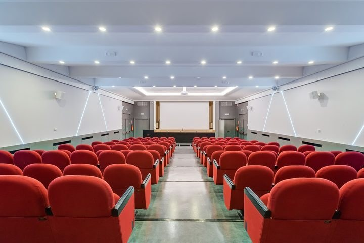

Tutti abbiamo partecipato a quel meeting. Sala senza finestre, aria condizionata troppo forte, proiettore che non si collega, caffè tiepido alle 11. Alle tre del pomeriggio metà dei partecipanti guarda il telefono, l'altra metà guarda l'orologio. Si torna a casa con tante slide e poche decisioni.
Poi c'è l'altro tipo di meeting. Quello dove la gente arriva rilassata, parla davvero, e la sera, a cena, continua a discutere le idee della giornata perché le trova interessanti. Quello in cui, tre mesi dopo, qualcuno dice ancora: "Ti ricordi quando abbiamo deciso questa cosa in Abruzzo?"
La differenza spesso non sta nell'agenda. Sta nel luogo.
Un centro congressi immerso nel verde
Villa Maria Hotel & Spa dispone di un centro congressi con 8 sale di diverse dimensioni, per un massimo di 210 persone. Questo significa che può ospitare una riunione riservata del consiglio di amministrazione, un workshop di due giorni con un team commerciale, oppure una convention aziendale con plenaria e sessioni parallele.
Ma ciò che lo rende diverso da un classico hotel dei congressi in città è ciò che c'è fuori dalla sala. Il parco privato di sei ettari, i pini e gli ulivi, la vista sul mare. Durante la pausa, invece di restare in un corridoio, i partecipanti escono all'aperto. Due chiacchiere sotto gli alberi, un caffè con vista sull'Adriatico. Si torna in sala con un'altra energia.

Organizzare senza stress
Se sei tu a organizzare l'evento, sai bene quanti dettagli ci sono da gestire. Quante persone? Quale disposizione della sala, a platea, a ferro di cavallo, a isole? Serve il proiettore? La videoconferenza con il team di Milano? A che ora è il coffee break? E il pranzo? E chi dorme in hotel?
A Villa Maria puoi gestire tutto con un unico interlocutore. Il team eventi ti aiuta a scegliere la sala giusta in base al numero dei partecipanti, a organizzare l'allestimento e le attrezzature tecniche, e a coordinare coffee break, pranzi e cene. Il Wi-Fi è disponibile anche nelle sale riunioni, così nessuno resta disconnesso.
Il consiglio più utile? Chiedi di effettuare una prova tecnica del proiettore e del collegamento video il giorno prima o la mattina presto. Dieci minuti di test ti evitano dieci minuti di imbarazzo davanti al CEO.
Riunione e pernottamento nello stesso posto
Uno dei vantaggi più sottovalutati è poter disporre di sale e camere all'interno della stessa struttura. Con 87 camere, l'hotel può ospitare gran parte del gruppo. Nessuno deve prendere un taxi la mattina, nessuno arriva in ritardo per il traffico. Si scende a colazione alle 7, e alle 9 si è già in sala.
Puoi richiedere un preventivo unico che includa sale, pernottamento e ristorazione, con fatturazione aziendale. Per le prenotazioni di gruppo, è sufficiente contattare l'hotel indicando le date, il numero di partecipanti e le esigenze tecniche.
La sera, quando il team diventa squadra
I meeting migliori non finiscono alle sei. Finiscono a tavola.
Il ristorante di Villa Maria propone cucina abruzzese e internazionale, con piatti di carne e di pesce, oltre a una cantina con vini del territorio. Una cena di gruppo qui non è il solito buffet aziendale. È un momento in cui i colleghi si conoscono davvero, e da cui spesso nasce più collaborazione che in tutta la giornata.
E prima di cena? Qualcuno va in spa, qualcuno sfida il direttore commerciale a padel, qualcuno si siede nel parco con un bicchiere di vino. Ognuno ricarica a modo suo.
Facile da raggiungere da tutta Italia
Per un evento aziendale, la logistica è tutto. Villa Maria è a circa 10 minuti dall'aeroporto di Pescara, vicinissima all'uscita A14 Pescara Sud, e a pochi minuti dalle stazioni ferroviarie di Pescara. Chi arriva in macchina trova 100 posti auto gratuiti. Da Roma ci vogliono circa due ore e mezza per attraversare l'Appennino.
Questo rende l'hotel una scelta comoda anche per team distribuiti tra il nord, il centro e il sud dell'Italia.
Il meeting che ricorderanno
Alla fine, l'obiettivo di ogni evento aziendale è semplice: che le persone tornino a casa con le idee più chiare e la voglia di lavorare insieme. Una sala ben attrezzata è il minimo. Un luogo che aiuta le persone a pensare, a parlare e a ricaricarsi: quello fa la differenza.
Se stai cercando un hotel con sale riunioni nella zona di Pescara, vale la pena di fare una telefonata.